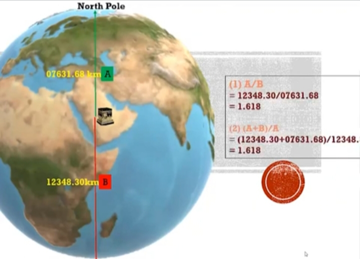

جواب
هیچ مسلمانی کعبه رو نمی پرسته بلکه کعبه قبله و نقطه اتحاد مسلمانانه و برای اینکه همه با هم بتونن در یک جهت به سمت کعبه نماز بخونن
در زمان پیامبر بسیاری از صحابه بالای کعبه می رفتن و اذان میدادن ، اگه مسلمانان کعبه را می پرستیدند هرگز بالای او نمی رفتند که اذان بدن

و در اسلام اگر کسی جهت قبله رو ندونه میتونه به هر جهتی که به نظرش درسته نماز بخونه
پس سجده کردن به سمت کعبه فقط به منظور اتحاد مسلمانان در عبادته نه پرستش کعبه

در دنیای ریاضیات عدد شگفت انگیز به نام فی یا نسبت طلایی وجود داره که مقدار تقریبی اون 1.618
کپلر منجم و ریاضیدان برجسته آلمانی در سال 1619 میلادی در کتاب هارمونی های جهان میگه :


نسبت طلایی یکی از گنجینه های بزرگ هندسه است که در ساختارهای طبیعی ، موسیقی و کیهان حضور داره و نمادی از نظم و زیبایی الاهیه


ماریو لیوو اخترفیزیکدان آمریکایی میگه :
عدد طلایی نه تنها در هنر و معماری
بلکه در طبیعت

دی ان ای

کهکشان ها

و حتی موسیقی


دیده میشه این نسبت پلی میان ریاضیات طبیعت و زیباییه
و اما نکته قابل تامل اینجاست که فاصله مکه تا قطب شمال 7,631 کیلومتر
و فاصله مکه تا قطب جنوب 12,348 کیلومتره
که نسبت این دو عدد به هم برابر با 1.618 یعنی دقیقا همون نسبت طلاییه
وقتی این دو نسبت در جایگاه مکان مقدسی همچون کعبه دیده میشه این سوال به وجود میاد
که آیا این به طور تصادفی اتفاق افتاده ؟ یا اینکه نشانگر تدبیر الاهیه
وعجیب تر اینکه در آیه 96 سوره آل عمران برای اولین بار در قرآن که از مکه یاد میشه
و خداوند اون را به عنوان مکانی مبارک معرفی میکنه
این آیه شامل 47 حرفه و از اول آیه تا کلمه مکه 29 حرفه


وقتی این دو عدد را بر هم تقسیم کنیم عدد 1.62 به دست میاد بازم نسبت طلایی
این دقیقا همون عددیه که در نسبت قطب ها تا مکه در نقشه جهانی بدست اومد اگر حتی یک حرف بیشتر یا کمتر بوداین نسبت طلایی به دست نمی اومد
همه این موارد اینو میرسونه که چنین نظم دقیقی نمیتونه تصادفی باشه و خالق زمین و ریاضیات یکیست
همون خدایی که کعبه را مکانی مقدس قرار داد